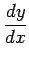
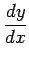
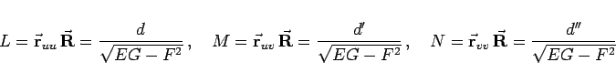
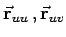
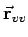
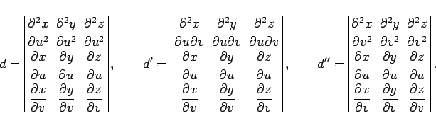
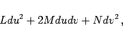

Inhalt Index DeskTop Bronstein

 Geometrie Differentialgeometrie Flächen Krümmung einer Fläche
Geometrie Differentialgeometrie Flächen Krümmung einer Fläche


Die Krümmungskreisradien R von Normalschnitten  hängen von den Tangentenrichtungen im Punkt P (s. Abbildunmg) ab, die durch die Werte  bestimmt sind.
hängen von den Tangentenrichtungen im Punkt P (s. Abbildunmg) ab, die durch die Werte  bestimmt sind.

Die Ableitungen genügen der Gleichung
Die Lösungen der Gleichung (3.531) bestimmen diejenigen Tangentenrichtungen, die zu den Extremwerten R1 (Minimalwert) und R2 (Maximalwert) von R gehören. Diese Tangentialrichtungen stehen senkrecht aufeinander und werden als Hauptkrümmungsrichtungen im Punkt P bezeichnet. Die Krümmungskreisradien der zugehörigen Normalschnitte C1 und C2, d.h. R1 und R2 sind die Hauptkrümmungskreisradien.
Wenn die Fläche in der expliziten Form z = f(x,y) (3.510) gegeben ist, dann lassen sich R1 und R2 als Wurzeln der quadratischen Gleichung
berechnen. Die Vorzeichen von R, R1 und R2 werden nach der gleichen Regel wie in (3.529) bestimmt.
Wenn die Fläche in der Vektorform (3.512) gegeben ist, dann treten an die Stelle von (3.531) und (3.532a) die Gleichungen
|  | (3.533c) |
berechnet werden. Dabei sind die Vektoren  und  die partiellen Ableitungen zweiter Ordnung des Radiusvektors  nach den Parametern u und In den Zählern stehen die Determinanten
nach den Parametern u und In den Zählern stehen die Determinanten
|  | (3.533d) |
Der Ausdruck
|  | (3.533e) |
der die Krümmungseigenschaften der Fläche enthält, heißt zweite quadratische Fundamentalform.
Krümmungslinien nennt man die Linien auf der Fläche, die in jedem Punkt die Richtung der Hauptnormalschnitte haben. Ihre Gleichungen ergeben sich durch Integration von (3.531) oder (3.533a).